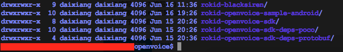
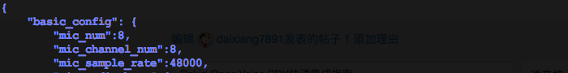
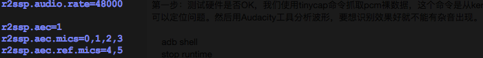
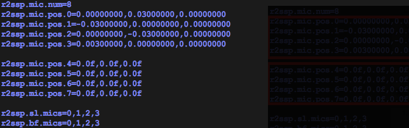
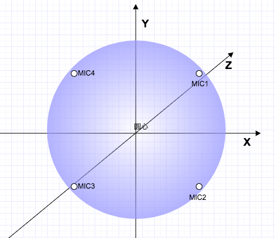

Rokid Open Voice SDK快速集成指南
简介
Rokid开放平台SDK包含Siren、NLP、ASR、TTS几大模块。要使用Rokid开放平台的SDK，首先需要有一套 Android 源码，然后下载以下SDK模块：
- rokid-blacksiren 前端拾音降噪，寻向，音墙
- rokid-openvoice-sdk 包含NLP语音识别，语义理解；ASR语音识别；TTS语音合成
- rokid-openvoice-sdk-deps-poco SDK依赖
- rokid-openvoice-sdk-deps-protobuf (Android 4.4 不需要)
Android 6.0 使用
git clone https://github.com/Rokid/rokid-openvoice-sdk-deps-protobuf -b android23
命令获取protobuf。另外，这里为大家提供了rokid-openvoice-sample-android示例代码帮忙大家快速集成。
接下来会从以下6个步骤完整讲述如何为自己的项目部署Rokid开放平台的SDK：
1 目录结构

命名建议与上图一致
rokid-openvoice-sample-android 与整个的业务逻辑相关，其中包含一个C进程和一个Java进程，以及MIC HAL。C进程用于为Siren提供pcm流，然后传递由Siren滤波降噪过的纯净语音给NLP或ASR，NLP或ASR经过云端处理返回结果，还有一个最重要的点就是维持Siren与NLP或ASR之间的状态。Java进程用于解析NLP或ASR返回结果，处理应用层逻辑。
2 配置
1、进入Rokid开放平台申请Rokid账号，已经有Rokid账号的同学可直接登录（但需进行部分信息补全）。
2、登录后点选「语音接入」进行设备认证信息申请。
3、具体做法：语音接入 > 创建新设备 > 填写设备名称 > 创建认证文件。之后您将获得：
account_id、 device_type_id、 device_id、 secret、key
通过以上信息，您就可以获取Rokid语音服务了，然后把申请得到的账号信息写入到 /rokid-openvoice-sample-android/etc/openvoice-profile.json文件中。
{
'host': 'apigwws.open.rokid.com',
'port': '443',
'branch': '/api',
'ssl_roots_pem': '/system/etc/roots.pem',
'key': 'your_key',
'device_type_id': 'your_device_type_id',
'device_id': 'your_device_id',
'api_version': '1',
'secret': 'your_secret',
'codec': 'opu'
}
请添加如下内容到 /device/xxxx/p230/p230.mk，每个人的路径是不一样的。这一步是为了让SDK编译出来的东西打包进system.img。
注意SDK存放位置
include openvoice/rokid-openvoice-sample-android/device/xxxx/p230/openvoice.mk
如果你是Android 5.0 的代码，你还需要添加如下内容，这一步后面会想办法去掉，不过目前还是必不可少的
/build/core/definitions.mk 最后一行添加下面这一句
include openvoice/rokid-openvoice-sample-android/build/core/definitions.mk
3 处理权限问题
Android 基于Linux引入了selinux，这是专门为Linux设计的一套安全机制。它有三种工作模式，Android4.2 以前一直处于Permission模式，之后便工作在enforcing模式，这就需要我们根据selinux的规范添加相应的.te文件，建议在开发阶段设回Permission，省掉一大堆权限问题。
/system/core/init/init.cpp
static selinux_enforcing_status selinux_status_from_cmdline() {
selinux_enforcing_status status = SELINUX_ENFORCING;
修改为
selinux_enforcing_status status = SELINUX_PERMISSIVE;
}
4 添加系统启动项
进入到 /device/xxxx/common/products/mbox/init.xxxx.rc加入如下内容，每个人的目录是不一样的。因为rokid-openvoice-sample-android中的C进程编译出来为runtime，所以我们加在这里，让init进程帮我们启动。
service runtime /system/bin/runtime
class main
user root
group root root
5 编译
如果你的开发板使用的是USB MIC，你需要定义宏 USB_AUDIO_DEVICE，具体操作如下：
/rokid-openvoice-sample-android/Android.mk
LOCAL_CPPFLAGS += -DUSB_AUDIO_DEVICE
如果你不使用Java或TTS接口，请修改如下内容，否则你需要使用
git clone https://github.com/Rokid/rokid-openvoice-sdk-deps-fastjson.git
获取依赖Jar包。
/rokid-openvoice-sdk/Android.mk
include $(LOCAL_PATH)/JavaLibrary.mk
修改为
#include $(LOCAL_PATH)/JavaLibrary.mk
单编 ：
先编译 Andorid，然后使用mm依次编译：rokid-openvoice-sdk-deps-protobuf，rokid-openvoice-sdk-deps-poco，rokid-openvoice-sdk，rokid-blacksiren，rokid-openvoice-sample-android。
整编 ：
./build/envsetup.sh
lunch <your config>
make aprotoc -j8
make -j8
6 调试
以上是一套完整的集成流程，到目前为止已经完成了50%的工作。调试主要围绕MIC这块，拾音以及语音识别准确度都围绕在这里，建议大家分两步：
第一步：测试硬件是否OK，我们使用tinycap命令抓取pcm裸数据，这个命令是从kernel层直接拿数据，不经过HAL层，这样可以定位问题。然后用Audacity工具分析波形，要想识别效果好就不能有杂音出现。
adb shell
stop runtime
cd /sdcard
tinycap file.wav [-D card] [-d device] [-c channels] [-r rate] [-b bits] [-p period_size] [-n n_periods]
card ：选择一个MIC设备，可以执行`cat /proc/asound/cards` 下查看
device ：0代表输入，1代表输出
channels ：通道数
rate ：采样率，Siren采样率最小必须为48K
bits ：比特率，32/24/16
period_size ：周期
periods ：点
例：
tinycap 1.wav -D 0 -d 0 -c 8 -r 48000 -b 32 -p 1024 -n 8
adb pull sdcard/1.wav ./
第二步：拾音，也就是Siren，这里教大家做一个简单的配置。
1. /rokid-blacksiren/resource/blacksiren.json
mic_num ：总的MIC个数(aec没有则不计算在内)
mic_channel_num：对应的channel数，一般是一对一
mic_simple_rate：大于等于48000

2. /rokid-blacksiren/resource/cn/r2ssp.cfg
audio.rate ：等同于上面的 sample_rate
aec ：(重要)全称为Acoustic Echo Chancellor，可以消除各种延迟的回声，这个需要内核做修改，大家可以关闭掉(置0)
aec.mics ：实际使用的MIC通道(不包括aec)
aec.ref.mics：aec的虚拟通道(aec是关闭可以不用管)

mic.num ：总的MIC个数(aec没有则不计算在内)
mic.pos(0...n)：MIC方位，程三维立体型，需要游标尺精确测量，寻向角度与此相关，不影响拾音。如图0--3为实际MIC，需要精确方位，后面全部都是AEC虚拟通道，不需要方位 。大家根据自己的硬件进行配置(详细测量方式见附件1)
sl.poc ：实际使用的MIC通道(不包括aec)
bf.mics ：同上

到这为止整个集成就大告完成，后续优化主要针对MIC硬件，以及添加AEC来改善拾音，下一章就会讲解编译中普遍遇到的问题。
附件1：
如图，MIC可以呈三维立体设计，但一般都是二维的。不管怎样，只要找到圆心，顺时针测量从圆心到MIC之间的距离。例如上面pos.0的坐标：x=0.00000000，y=0.03000000，z=0.00000000，单位为”米“。 